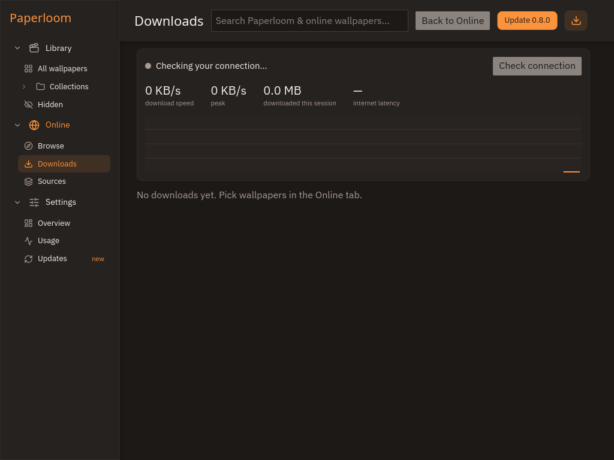
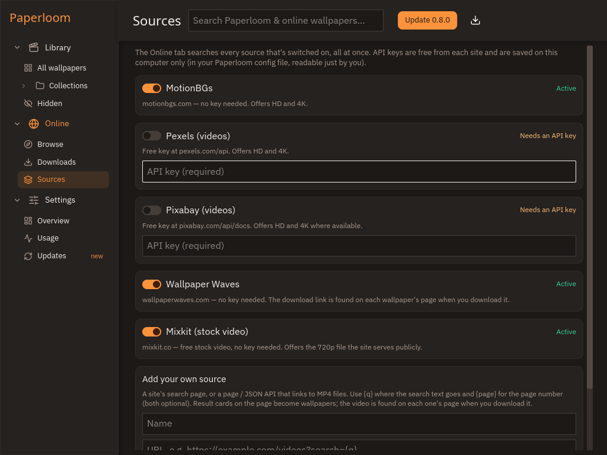
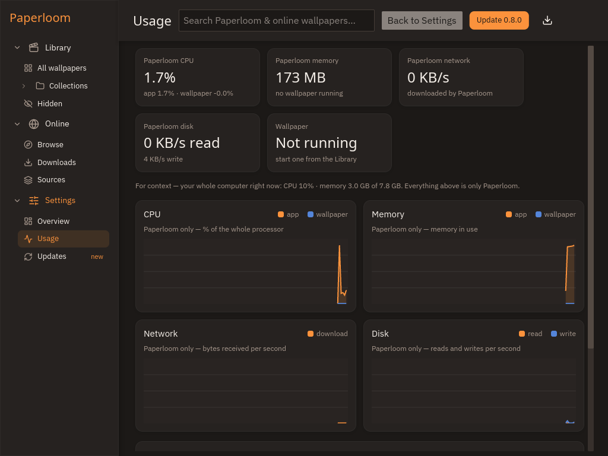

Real desktop background
Sits behind your icons on X11, Wayland, Windows 10/11 and macOS.
Play any video as your real desktop background on Linux, Windows and macOS. It pauses by itself when you can't see it, so an idle desktop stays idle.
Sits behind your icons on X11, Wayland, Windows 10/11 and macOS.
Fullscreen app, locked screen, low battery, covered desktop, chosen apps or idle time.
Search several wallpaper sites at once, preview, and download straight into your library.
Change wallpapers on an interval or a weekly schedule, even with the window closed.
Files for the latest release.
Loading releases…
Build and install with the PKGBUILD from the repository:
sudo pacman -S --needed base-devel git
git clone https://github.com/theamanullahdev/paperloom
cd paperloom/packaging/arch && makepkg -siPrefer a bundle? The Flatpak above runs on any distribution.
Add the apt repository once and Paperloom updates with your normal system updates:
sudo curl -fsSLo /usr/share/keyrings/paperloom.asc https://theamanullahdev.github.io/paperloom/apt/paperloom.asc
echo "deb [arch=amd64 signed-by=/usr/share/keyrings/paperloom.asc] https://theamanullahdev.github.io/paperloom/apt stable main" | sudo tee /etc/apt/sources.list.d/paperloom.list
sudo apt update && sudo apt install paperloomSmartScreen shows “Windows protected your PC”. Click More info → Run anyway.
Open System Settings → Privacy & Security and click Open Anyway next to Paperloom, or run:
xattr -dr com.apple.quarantine /Applications/Paperloom.appPick any version, older ones included.


